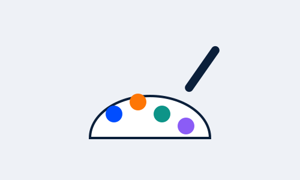

DesignGraphic design vs branding: what's the difference?
Branding is the bigger picture: your name, your colours, your tone, and the impression you want to leave. Graphic design is how that shows up on a poster, a banner or a social media post.
You need both working together. See our branding and design services for how we approach this.
Ready to go digital?
Get this for your own business
We build exactly this kind of work for businesses in Nairobi, Kisumu and across Kenya, on a clear timeline and a simple price.
Chat on WhatsApp for a free quote